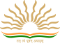
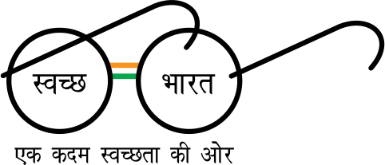

KENDRIYA VIDYALAYA SANGATHAN
An autonomous body under the Ministry of Education, Government of India
AN AUTONOMOUS BODY UNDER MINISTRY OF EDUCATION, GOVERNMENT OF INDIA

के. वि. सं. उच्च गुणवत्ता वाले शैक्षिक प्रयासों के माध्यम से उत्कृष्टता प्राप्त करने के लिए अपने छात्रों को ज्ञान/मूल्य प्रदान करने और उनकी प्रतिभा, उत्साह और रचनात्मकता का पोषण करने में विश्वास रखता है।
शिक्षा का एक सामान्य कार्यक्रम प्रदान करके रक्षा और अर्ध-सैन्य कर्मियों सहित स्थानांतरणीय केंद्र सरकार के कर्मचारियों के बच्चों की शैक्षिक आवश्यकताओं को पूरा करना है।
स्कूली शिक्षा के क्षेत्र में उत्कृष्टता हासिल करने और गति निर्धारित करने के लिए
केंद्रीय माध्यमिक शिक्षा बोर्ड (सीबीएसई) और राष्ट्रीय शैक्षिक अनुसंधान और प्रशिक्षण परिषद (एनसीईआरटी) आदि जैसे अन्य निकायों के सहयोग से शिक्षा में प्रयोग और नवाचारों को शुरू करना और बढ़ावा देना।
राष्ट्रीय एकता की भावना का विकास करना और बच्चों में “भारतीयता” की भावना पैदा करना।
प्रिय विद्यार्थियों, शिक्षकवृंद एवं अभिभावकगण, आप सभी को केन्द्रीय विद्यालय संगठन के ‘स्थापना दिवस-2024’ की हार्दिक शुभकामनाएं। 1963 में एक साधारण सी शुरुआत करने वाला केन्द्रीय विद्यालय संगठन आज स्कूल शिक्षा के क्षेत्र में उत्कृष्टता का एक प्रेरणादायक संस्थान बनकर उभरा है और बढ़ते हुए वर्षों के साथ निरंतर नवाचार और सृजन की कहानी लिख रहा है।
के. वि. के छात्रों को दिल्ली मेट्रो में भारत की माननीय राष्ट्रपति श्रीमती द्रौपदी मुर्मु के साथ बातचीत करने और यात्रा करने का दुर्लभ सौभाग्य प्राप्त हुआ (07.02.2024)
29 जनवरी, 2024 को नई दिल्ली के भारत मंडपम में परीक्षा पे चर्चा (पीपीसी)।
के. वि. सं. का हीरक जयंती समारोह – 15.12.2023
भारत के माननीय प्रधान मंत्री के साथ रक्षा बंधन
भारत के माननीय राष्ट्रपति के साथ रक्षा बंधन
भारत सरकार द्वारा जारी परिपत्र नई
भारत सरकार द्वारा जारी परिपत्र नई
50 घंटे की सीपीडी से संबंधित पूछे जाने वाले प्रश्न एवं उत्तर I नई
50 घंटे सीपीडी से संबंधित पूछे जाने वाले प्रश्न एवं उत्तर का परिपत्र संचालन । नई
संयुक्त आयुक्त/उपायुक्त /सहायक आयुक्त पद की अनंतिम वरिष्ठता सूची , वर्ष 2025 के संबंध मे ।
संयुक्त आयुक्त (वित्त) /उपायुक्त (वित्त) /सहायक आयुक्त (वित्त),/वित्त अधिकारी पद की अनंतिम वरिष्ठता सूची, वर्ष 2025 के संबंध मे ।
दिनांक 04.12.2024 को अजेंडा के परिसंचरण द्वारा सम्पन्न केन्द्रीय विद्यालय संगठन के अधिशासी मण्डल की 127वीं बैठक का कार्यवृत । नई
दिनांक 22.08.2024 को सम्पन्न केन्द्रीय विद्यालय संगठन के अधिशासी मण्डल की 126वीं बैठक के कार्यवृत का परिचालन । नई